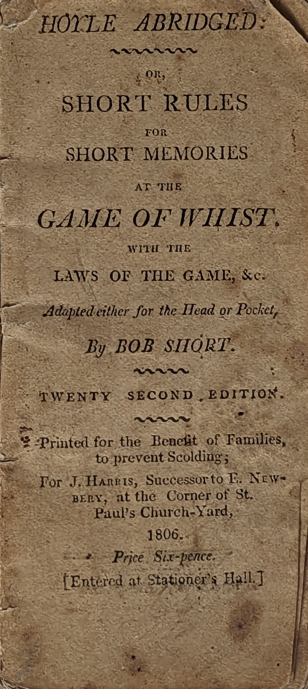

A Descriptive Bibliography of Edmond Hoyle
Copyright © 2014-26 by David Levy
(page updated 2023-11-30)User Guide
Harris.Whist.1806.London
Short Rules for Whist, for J. Harris, “twenty-second” edition, 1806.
 |
Title: | HOYLE ABRIDGED: | [short rule] | OR, | SHORT RULES | FOR | SHORT MEMORIES | AT THE | GAME OF WHIST. | WITH THE | LAWS OF THE GAME, &c | Adapted for the Head or Pocket. | By BOB SHORT. | [short rule] | TWENTY SECOND EDITION. | [short rule] | Printed for the Benefit of Families, | to prevent Scolding; | For J. Harris, Successor to E. New-|bery, at the Corner of St. | Paul's Church-Yard. | 1806. | Price Sixpence. | {Entered at Stationers' Hall.} |
| Collation: | 11.8 x 5.5: A12 [$1–3 signed]; 12 leaves, pp. [1–2] 3–8 [9] 10–11 [12] 13–24 |
| Contents: | Signature (Page) Reference | Contents | Signature (Page) Reference | Running Titles |
| A1r (1) | title | |||
| A1v (2) | ‘[reverse oxford rule] | H. Bryer, Printer, | Bridge-Street, Blackfriars.’ | |||
| A2r (3) | ‘[short rule] | TO THE PUBLIC. | [...] | BOB SHORT.’ | |||
| A2v (4) | ‘[short rule] | Just published, | NEW EDITIONS. | OF THE FOLLOWING | APPROVED LITTLE WORKS. | [...]’ | |||
| A3r–A4v (5–8) | ‘[short rule] | DEDICATION. | [short rule] | TO THE FOUR KINGS. | [...] | Your devoted Slave. | BOB SHORT. | Baker's Coffee-House, | Exchange Alley, | Jan. 1, 1793.’ | |||
| A5r–A12v (9–24) | ‘THE | GAME OF WHIST. | [...] | [colophon]’ |
| Publisher: | John Harris |
| Printer: | Henry Bryer |
| Price: | 6d. (title) |
| Colophon: | ‘H. Bryer, Printer, | Bridge-Street, Blackfriars.’ |
| Copies Seen: | Levy [2188] |
| Notes: | This is a different setting of type from Harris.Whist.Bath.1806, a "twenty first" edition of 1806 and Harris.Whist.1809, a "twenty second" edition of 1809, also printed by Henry Bryer. |